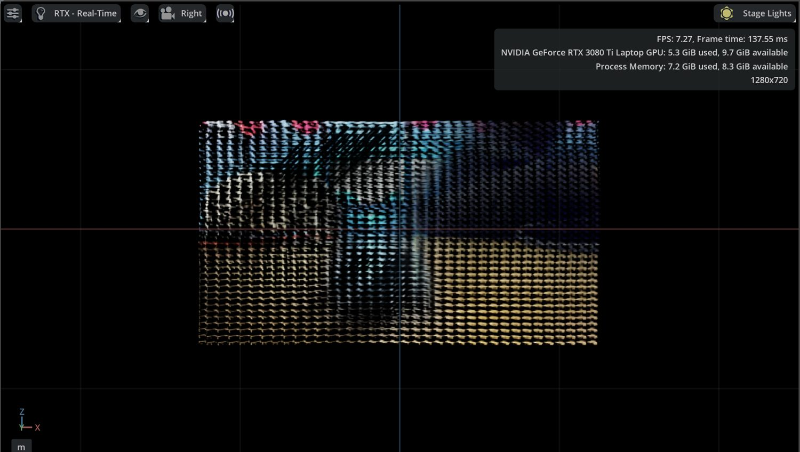

Nov – Dec 2025
Proof of concept and a big plan
I used a public Roboflow contact-point dataset to check that contact points could be detected in video at all. None of those images are in my dataset.
The first plan was ambitious: a custom attention network with depth input, and a stack of measurements on top. It was the starting point, not the destination.
